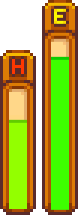

Health
| Getting Started |
The Player |
Options | Controls | Mobile Controls |
Health | Energy | Skills | Day Cycle |

Health is measured by a bar next to the energy bar in the bottom right corner of the user interface (UI). The health bar is only visible while inside of the Mines, the Secret Woods, the Slime Hutch, the Skull Cavern, the Mutant Bug Lair, the Quarry Mine, the Volcano Dungeon, or when the meter is not full. The most common way to lose health is by being attacked by Monsters, such as those in the Mines or the Slimes in the Secret Woods or Slime Hutch, though players can also lose health by getting hit by the train on the Railroad.
Health can be replenished either by consuming food, sleeping, or using the Spa. In a multiplayer game, health (and energy) can be replenished by standing in bed without going to sleep for the day.
Maximum health capacity starts at 100 points. Each increase in Combat Level adds 5 points to the player's health meter, with the exceptions of levels 5 and 10. Health points are only increased when levelling up to levels 5 or 10 if the Fighter and Defender professions are chosen. Finding Secret Note #10 and then meeting Mr. Qi at floor 100 of the Skull Cavern will award the player with a cutscene in which Mr. Qi gives the player "Iridium snake milk", which will increase maximum health by 25 points.
The player will pass out when health reaches zero. The only exception is if the player has a Phoenix Ring and is using the ring's ability for the first time on that day. One of the villagers will awaken the player. Depending on which one it is, the player may wake up in the entry room of The Mines, in the bedroom of the Farmhouse, or in Harvey's Clinic. If the player passes out inside the Skull Cavern, they will be awakened inside Harvey's Clinic.
While passed out, the player will lose gold and may lose up to three inventory items. One lost item can be retrieved through the "Item Recovery Service" at the Adventurer's Guild. The amount of gold lost is determined by the player's currently available gold, up to  15,000g.
15,000g.
Notes
- If the player has a Vampire Ring equipped, they will gain 2 health points after slaying a monster.
- If the player has a weapon with the Vampiric enchantment, there is a chance they will gain health points after slaying a monster.
- If the player has a Phoenix Ring equipped, they will not pass out and will regain half of their maximum health after reaching zero health. This can only happen once per day.
- If the player has a Fairy Box equipped, they will regain a variable amount of health based on their damage dealt to and received from enemies.
History
- 1.3.27: Added multiplayer health regen by standing in bed. Added Mr. Qi event at floor 100 of the Skull Cavern.
- 1.4: Added Marlon's Item Recovery Service. Fixed bug where tooltip displayed less health than was actually gained from consuming an item.
- 1.6: Increased passing-out penalty from
 5,000g to 15,000g. Inventory losses are now capped at 3 items. Fairy Box can be used to regain health.
5,000g to 15,000g. Inventory losses are now capped at 3 items. Fairy Box can be used to regain health.